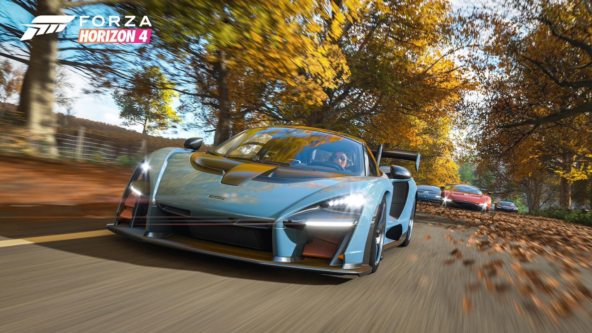
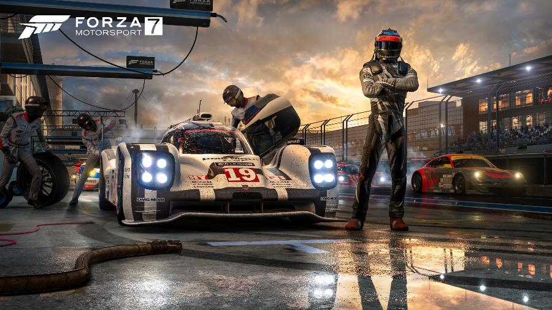

Forza Horizon é um jogo em um festival, chamado Festival Horizon que ocorre no estado do Colorado. O objetivo é progredir no jogo para obter pulseiras por pilotar depressa, destruir propriedade, vencer corridas de pilotagem. Horizon apresenta as físicas de Forza Motorsport 4. O jogo, porém, apresenta características diferentes, tendo uma jogabilidade considerada mais "arcade" em relação ao Forza Motorsport 4. Os jogadores são capazes de dirigir a qualquer lugar que seus carros possam chegar, como campos e planícies,[3] embora muitas estradas usem muretas ou cercas para limitar o jogador. Vários tipos de corrida estão incluídos, de drift a rally, passando por corridas ponto a ponto. O tráfego da inteligência artificial está presente nas estradas,Forza.[3] Os jogadores também podem desafiar outros pilotos do Festival Horizon que encontrarem para uma corrida um contra um em um local determinado. O local é sempre aleatório e a inteligência artificial tem a capacidade de cortar caminho para tirar vantagem.[4] As corridas ocorrem em tempos diferentes ao longo do ciclo de dia e noite incluído no jogo, incluindo corridas noturnas.[3] O sistema de habilidade está implementado no jogo para que os jogadores ganhem credibilidade nas ruas durante as corridas por dirigirem perigosamente. Atos como drifting, saltos sobre obstáculos e fazer com que o carro fique em duas rodas contribuem para o aumento da credibilidade. Isto pode ser feito em sequência num combo, que por sua vez afeta o dinheiro pago no final da corrida.[5] A credibilidade também afeta o nível de popularidade do jogador no jogo. Conforme a popularidade do jogador aumenta, novos eventos especiais chamados de Eventos de Armação são desbloqueados, tais como corridas contra balões e aviões.[5]hh As armadilhas de velocidade estão presentes no jogo e os jogadores podem desafiar entre si pela velocidade máxima de uma área. As câmeras gravam os tempos do jogador, que pode depois ser compartilhados entre os rivais. Estes rivais podem então tentar quebrar o tempo compartilhado.[5] Um modo de foto também está incluído.[3] Além das corridas, os jogadores podem procurar carros em celeiros—carros que estão abandonados por muito tempo—, restaurá-los e, em seguida, adicioná-los a sua garagem.[4]
Forza Horizon Arte da capa da edição brasileira de Forza Horizon, apresentando o Viper GTS e o Festival Horizon no fundo Desenvolvedora(s) Playground Games Turn 10 Studios Distribuidora(s) Xbox Game Studios Plataforma(s) Xbox 360 retrocompatível com Xbox One Série Forza Horizon Data(s) de lançamento JP 25 de outubro de 2012[1] AN 23 de outubro de 2012[1] EU 26 de outubro de 2012[1] AU 23 de outubro de 2012[1] Gênero(s) Corrida e voo Modos de jogo Single-player, multiplayer online Forza Horizon 2 (2014) Forza Horizon 3 (2016) Forza Horizon é um jogo de corrida exclusivo para o console Xbox 360 e retrocompatível com Xbox One. Desenvolvido principalmente pela desenvolvedora britânica Playground Games em associação com a estadunidense Turn 10 Studios, o jogo faz parte da franquia Forza Motorsport, porém é mais considerado um spin-off ao invés de um membro da série principal.[2] Índice 1 Jogabilidade 2 Desenvolvimento 3 Carros 4 Referências 5 Ligações externas Jogabilidade Forza Horizon é um jogo em um festival, chamado Festival Horizon que ocorre no estado do Colorado. O objetivo é progredir no jogo para obter pulseiras por pilotar depressa, destruir propriedade, vencer corridas de pilotagem. Horizon apresenta as físicas de Forza Motorsport 4. O jogo, porém, apresenta características diferentes, tendo uma jogabilidade considerada mais "arcade" em relação ao Forza Motorsport 4. Os jogadores são capazes de dirigir a qualquer lugar que seus carros possam chegar, como campos e planícies,[3] embora muitas estradas usem muretas ou cercas para limitar o jogador. Vários tipos de corrida estão incluídos, de drift a rally, passando por corridas ponto a ponto. O tráfego da inteligência artificial está presente nas estradas,Forza.[3] Os jogadores também podem desafiar outros pilotos do Festival Horizon que encontrarem para uma corrida um contra um em um local determinado. O local é sempre aleatório e a inteligência artificial tem a capacidade de cortar caminho para tirar vantagem.[4] As corridas ocorrem em tempos diferentes ao longo do ciclo de dia e noite incluído no jogo, incluindo corridas noturnas.[3] O sistema de habilidade está implementado no jogo para que os jogadores ganhem credibilidade nas ruas durante as corridas por dirigirem perigosamente. Atos como drifting, saltos sobre obstáculos e fazer com que o carro fique em duas rodas contribuem para o aumento da credibilidade. Isto pode ser feito em sequência num combo, que por sua vez afeta o dinheiro pago no final da corrida.[5] A credibilidade também afeta o nível de popularidade do jogador no jogo. Conforme a popularidade do jogador aumenta, novos eventos especiais chamados de Eventos de Armação são desbloqueados, tais como corridas contra balões e aviões.[5]hh As armadilhas de velocidade estão presentes no jogo e os jogadores podem desafiar entre si pela velocidade máxima de uma área. As câmeras gravam os tempos do jogador, que pode depois ser compartilhados entre os rivais. Estes rivais podem então tentar quebrar o tempo compartilhado.[5] Um modo de foto também está incluído.[3] Além das corridas, os jogadores podem procurar carros em celeiros—carros que estão abandonados por muito tempo—, restaurá-los e, em seguida, adicioná-los a sua garagem.[4] Desenvolvimento Forza Horizon foi desenvoldido pela britânica Playground Games, que é composta por funcionários que trabalharam formalmente em vários estúdios renomados nos primeiros títulos de séries de corrida como Project Gotham Racing, Driver, Colin McRae: Dirt, Colin McRae Rally, Race Driver: Grid e Burnout.[2] Quando questionado sobre a participação da Playground Games, Dan Greenawalt, chefe da Turn 10 Studios, disse, "Não confiaria nessa parceria tanto quanto eu confio se eu não esperasse que eles surpreendessem a mim e aos nossos jogadores. Tenho respeito por sua capacidade de vir com grandes ideias. Então eu acho que sim, estão sendo desafiados pelos consumidores da mesma forma que iremos surpreendê-los com inovação. É assim que eles se veem, é assim que os vemos, é como eles nos veem. É de fato uma meta compartilhada."[6] O desenvolvimento do ambiente começou com uma pesquisa em quase 30 locais do mundo real. Após a pesquisa inicial, o diretor criativo Ralph Fulton declarou que havia "um único vencedor", Colorado, nos Estados Unidos.[4] Foram feitas viagens ao estado para tiragem de fotos e mais de 50 mil foram feitas para referência. O objetivo, declarou Fulton, era "construir a nossa visão própria do Colorado".[4] O design inicial do mundo começou com um layout 2D e depois evoluiu para múltiplas áreas criadas com modelos 3D. O jogo apresenta vários tipos de paisagens, incluindo estradas de montanhas cobertas de neve, planícies, colinas e uma área inspirada no Red Rocks Park do Colorado. Tudo isto está apresentado de forma fictícia juntamente com o local do Festival Horizon no jogo. Os desenvolvedores afirmaram que encontrar meios de transição entre estas áreas foi um dos maiores desafios.[4] A flora e a fauna também são visíveis no jogo para aumentar o realismo e a profundidade.[4]
Referências: Wikipédia.